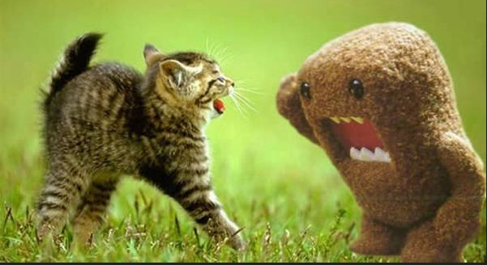

Il wargame Bandit è rivolto ai principianti assoluti.
Insegnerà le basi necessarie per essere in grado di giocare
ad altri wargame.
esso ti permetterà di fondare delle solide basi per quanto
riguarda il penetration testing